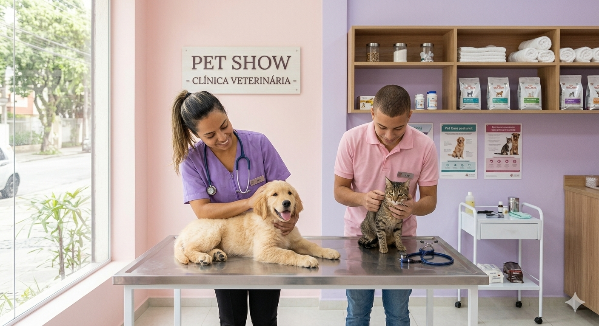

Agendar Consulta
Agendar Consulta
🩺 Saúde & Prevenção
Cuidado veterinário completo e acolhedor no Pet Show
Nossa equipe médica realiza consultas, vacinação e acompanhamento preventivo com paciência e carinho, garantindo tranquilidade para você e saúde para o seu pet.
Agendar Consulta
Atendimentos Clínicos
Consultas & Check-up
Avaliação clínica detalhada para filhotes, adultos e pets idosos, focada na prevenção e qualidade de vida.
Marcar avaliação →Vacinação Importada
Protocolos completos de vacinas éticas e importadas para cães e gatos, com carteirinha de acompanhamento.
Consultar vacinas →Exames & Vermifugação
Coleta de exames laboratoriais rápidos, controle de parasitas e orientação nutricional personalizada.
Saber mais →Informações de Atendimento Clínico
- 🕒 Horário de Atendimento: Segunda a Sábado, das 08h às 19h.
- 🐱 Atendimento Cat Friendly: Manejo calmo e adaptado para reduzir o estresse dos felinos.
- 📱 Retorno Acompanhado: Suporte pelo WhatsApp após a consulta para tirar dúvidas sobre receitas e cuidados.